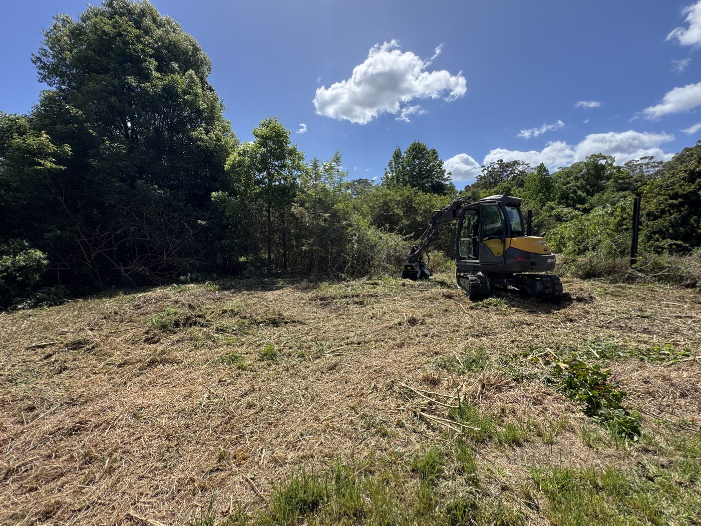
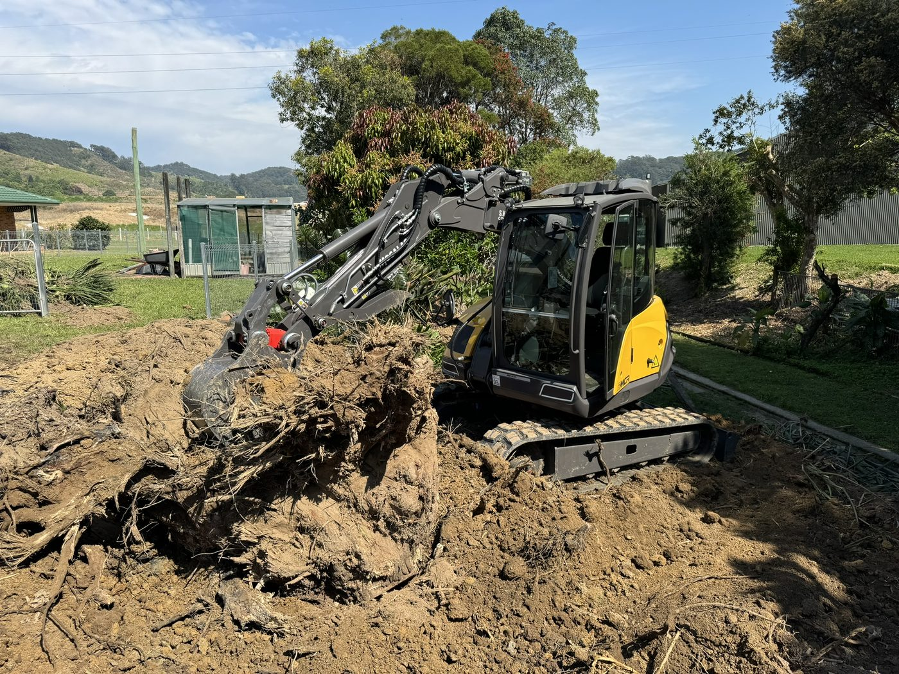
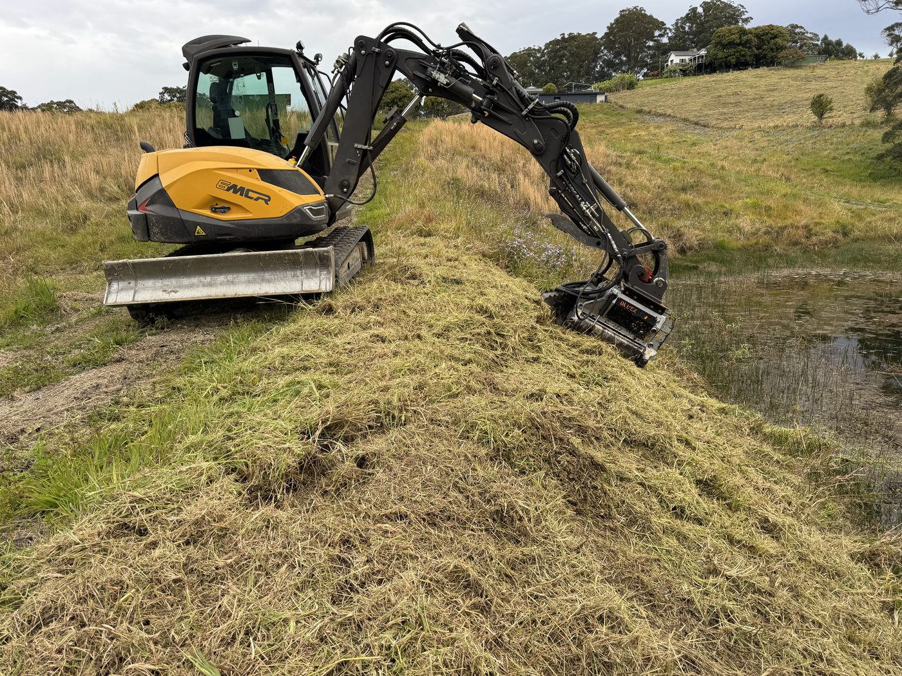

Overgrown block, choked fenceline or a paddock going back to scrub? We clear it, mulch it or cart it away across Coffs Harbour, Bonville, Bellingen and the Mid North Coast, working within the NSW clearing rules, not around them.
Vegetation management is the clearing, mulching and tidy-up that brings a block back into use: lantana, privet, camphor laurel and regrowth knocked down, fencelines and boundaries opened up, stumps dug out and the green waste dealt with.
Most of it is done with the Mecalac and its FAE mulching head, so the scrub is mulched where it stands and there is no burn pile at the end. Where you want the material gone, the Hino tipper carts it away.
We work under the 10/50 vegetation clearing entitlement, existing Property Vegetation Plans (PVPs) and Local Land Services approvals under the Biodiversity Conservation Act 2016. Check your 10/50 eligibility at rfs.nsw.gov.au before calling, or just call us and we'll help work it out. RFS Boundary Clearing Tool.
Related: Forestry mulching, Excavation, Firebreaks & hazard reduction.
Scrub mulched back to the edge on Yarraman Road, stumps dug out on Roselands Drive and a dam bank mulched on North Boambee Road.



We're based in Coffs Harbour and work across the Coffs Coast and the Mid North Coast.
Boambee, North Boambee Valley, Coramba, Nana Glen and the rural blocks around the city.
Just south of Coffs: acreage and residential blocks in Bonville, Sawtell and Toormina.
Through the Bellingen Shire, from Old Coast Road to the river flats and up on the plateau at Dorrigo.
Woolgoolga, Corindi Beach, Red Rock and Grafton, quoted per job for the travel.
Nambucca Heads, Macksville, Kempsey and South West Rocks, quoted per job for the travel.
In designated bushfire-prone areas the NSW 10/50 scheme lets you clear some vegetation near your home without council approval, with limits on slopes, waterways, heritage and habitat. Other clearing can need a Property Vegetation Plan or a Local Land Services approval. The RFS 10/50 eligibility checker is worth a look first, and if you are still not sure, call us.
Neither, usually. Mulching leaves the material on the ground as cover, which suppresses regrowth and holds moisture. If you would rather it was gone, the tipper takes it away.
Yes. Stumps and root balls are dug out with the excavator, and the hole backfilled and levelled.
Forestry mulching is one of the tools. Vegetation management is the whole job: deciding what stays and what goes, mulching or removing it, and dealing with stumps and waste. See our forestry mulching page for the mulching side.